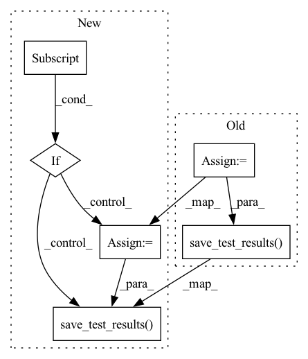

Pattern ID :6360

Before Change
dump(clf, self.serving_model_dir)
// for model agnostic evaluator
test_results = self.test_fn(clf, X_eval, y_eval)
trainer_utils.save_test_results(test_results, self.test_results)
def input_fn(self,
file_pattern: List[Text],
tf_transform_output: tft.TFTransformOutput):
After Change
dump(clf, self.serving_model_dir)
// for model agnostic evaluator
if split_mapping[trainer_utils.TEST_SPLITS]:
for split in split_mapping[trainer_utils.TEST_SPLITS]:
pattern = self.input_patterns[split]
X_test, y_test = self.input_fn([pattern])
test_results = self.test_fn(clf, X_test, y_test)
trainer_utils.save_test_results(test_results,
self.output_patterns[split])
def input_fn(self,
file_pattern: List[Text]):
In pattern: SUPERPATTERN
Frequency: 4
Non-data size: 6
Instances
Fragment ID: 22199938
Project Name: maiot-io/zenml
Commit Name: 9123f2c0c7eed9f8f01f3d5fbc2cd46c3937d478
Time: 2021-03-29
Author: bariscandurak@hotmail.com
File Name: examples/scikit/step/trainer.py
M Class Name: MyScikitTrainer
N Class Name: MyScikitTrainer
M Method Name: run_fn(1)
N Method Name: run_fn(1)
M Parent Class: BaseTrainerStep
N Parent Class: BaseTrainerStep
M File Name: examples/scikit/step/trainer.py
N File Name: examples/scikit/step/trainer.py
M Start Line: 48
M End Line: 68
N Start Line: 47
N End Line: 83
'>
Before Change
os.path.join(self.serving_model_dir, "model.ckpt"))
// test fn for evaluator
test_results = self.test_fn(model, eval_dataset)
utils.save_test_results(test_results, self.test_results)
After Change
def run_fn(self):
split_mapping = utils.fill_split_mapping_w_defaults(
mapping=self.split_mapping,
splits=list(self.input_patterns.keys()))
train_split_patterns = [self.input_patterns[split]
for split in split_mapping[utils.TRAIN_SPLITS]]
train_dataset = self.input_fn(train_split_patterns)
eval_split_patterns = [self.input_patterns[split]
for split in split_mapping[utils.TEST_SPLITS]]
eval_dataset = self.input_fn(eval_split_patterns)
class LitModel(pl.LightningModule):
def __init__(self):
super().__init__()
self.l1 = torch.nn.Linear(8, 64)
self.layer_out = torch.nn.Linear(64, 1)
def forward(self, x):
x = torch.relu(self.l1(x))
x = self.layer_out(x)
return x
def training_step(self, batch, batch_idx):
x, y, z = batch
x_batch = torch.cat(list(x.values()), dim=-1)
y_t = torch.cat(list(y.values()), dim=-1)
y_hat = self(x_batch)
loss = F.binary_cross_entropy_with_logits(y_hat, y_t)
tensorboard_logs = {"train_loss": loss}
return {"loss": loss, "log": tensorboard_logs}
def configure_optimizers(self):
return torch.optim.Adam(self.parameters(), lr=0.001)
def train_dataloader(self):
return train_dataset
def validation_step(self, batch, batch_idx):
x, y, z = batch
x_batch = torch.cat(list(x.values()), dim=-1)
y_t = torch.cat(list(y.values()), dim=-1)
y_hat = self(x_batch)
return {
"val_loss": F.binary_cross_entropy_with_logits(y_hat, y_t)}
def validation_epoch_end(self, outputs):
avg_loss = torch.stack([x["val_loss"] for x in outputs]).mean()
tensorboard_logs = {"val_loss": avg_loss}
return {"avg_val_loss": avg_loss, "log": tensorboard_logs}
def val_dataloader(self):
return eval_dataset
model = LitModel()
// most basic trainer, uses good defaults
trainer = Trainer(
default_root_dir=self.log_dir,
max_epochs=self.epochs,
)
trainer.fit(model)
path_utils.create_dir_if_not_exists(self.serving_model_dir)
if path_utils.is_remote(self.serving_model_dir):
temp_model_dir = "__temp_model_dir__"
temp_path = os.path.join(os.getcwd(), temp_model_dir)
if path_utils.is_dir(temp_path):
raise PermissionError("{} is used as a temp path but it "
"already exists. Please remove it to "
"continue.")
trainer.save_checkpoint(os.path.join(temp_path, "model.cpkt"))
path_utils.copy_dir(temp_path, self.serving_model_dir)
path_utils.rm_dir(temp_path)
else:
trainer.save_checkpoint(
os.path.join(self.serving_model_dir, "model.ckpt"))
// test
if split_mapping[utils.TEST_SPLITS]:
for split in split_mapping[utils.TEST_SPLITS]:
pattern = self.input_patterns[split]
test_dataset = self.input_fn([pattern])
test_results = self.test_fn(model, test_dataset)
utils.save_test_results(test_results,
self.output_patterns[split])
'>
Fragment ID: 22199937
Project Name: maiot-io/zenml
Commit Name: 536e5051dd438dda4ae8d95e0225ab1666f8e31f
Time: 2021-03-29
Author: bariscandurak@hotmail.com
File Name: examples/pytorch_lightning/step/trainer.py
M Class Name: MyPyTorchLightningTrainer
N Class Name: MyPyTorchLightningTrainer
M Method Name: run_fn(1)
N Method Name: run_fn(1)
M Parent Class: TorchFeedForwardTrainer
N Parent Class: TorchFeedForwardTrainer
M File Name: examples/pytorch_lightning/step/trainer.py
N File Name: examples/pytorch_lightning/step/trainer.py
M Start Line: 33
M End Line: 107
N Start Line: 33
N End Line: 118
'>
Before Change
f"{epoch_acc / step_count:.3f}")
// test
test_results = self.test_fn(model, eval_dataset)
utils.save_test_results(test_results, self.test_results)
path_utils.create_dir_if_not_exists(self.serving_model_dir)
if path_utils.is_remote(self.serving_model_dir):
temp_model_dir = "__temp_model_dir__"
After Change
f"{epoch_acc / step_count:.3f}")
// test
test_datasets = self.input_fn(self.test_files,
self.schema,
combine_splits=False)
if test_datasets:
test_results = self.test_fn(model, eval_dataset)
utils.save_test_results(test_results, self.test_results)
path_utils.create_dir_if_not_exists(self.serving_model_dir)
if path_utils.is_remote(self.serving_model_dir):
temp_model_dir = "__temp_model_dir__"
'>
Fragment ID: 22199940
Project Name: maiot-io/zenml
Commit Name: a678456f2da1ec5dd05d8a00e36dba4d05b98668
Time: 2021-03-23
Author: bariscandurak@hotmail.com
File Name: zenml/steps/trainer/pytorch_trainers/torch_ff_trainer.py
M Class Name: FeedForwardTrainer
N Class Name: FeedForwardTrainer
M Method Name: run_fn(1)
N Method Name: run_fn(1)
M Parent Class: TorchBaseTrainerStep
N Parent Class: TorchBaseTrainerStep
M File Name: zenml/steps/trainer/pytorch_trainers/torch_ff_trainer.py
N File Name: zenml/steps/trainer/pytorch_trainers/torch_ff_trainer.py
M Start Line: 210
M End Line: 211
N Start Line: 229
N End Line: 237
'>
Before Change
model = self.model_fn(train_dataset=train_dataset,
eval_dataset=eval_dataset)
test_results = self.test_fn(model, eval_dataset)
utils.save_test_results(test_results, self.test_results)
signatures = {
"serving_default":
self._get_serve_tf_examples_fn(
After Change
test_split_patterns = [self.split_patterns[split]
for split in self.split_mapping["test"]]
if test_split_patterns:
test_dataset = self.input_fn(test_split_patterns)
test_results = self.test_fn(model, test_dataset)
utils.save_test_results(test_results, self.test_results_dir)
signatures = {
"serving_default":
self._get_serve_tf_examples_fn(
'>
Fragment ID: 22199934
Project Name: maiot-io/zenml
Commit Name: 304c723aea623e22e60bcee3acb417d4b6b1264d
Time: 2021-03-26
Author: bariscandurak@hotmail.com
File Name: zenml/steps/trainer/tensorflow_trainers/tf_ff_trainer.py
M Class Name: FeedForwardTrainer
N Class Name: FeedForwardTrainer
M Method Name: run_fn(1)
N Method Name: run_fn(1)
M Parent Class: TFBaseTrainerStep
N Parent Class: TFBaseTrainerStep
M File Name: zenml/steps/trainer/tensorflow_trainers/tf_ff_trainer.py
N File Name: zenml/steps/trainer/tensorflow_trainers/tf_ff_trainer.py
M Start Line: 128
M End Line: 150
N Start Line: 127
N End Line: 156